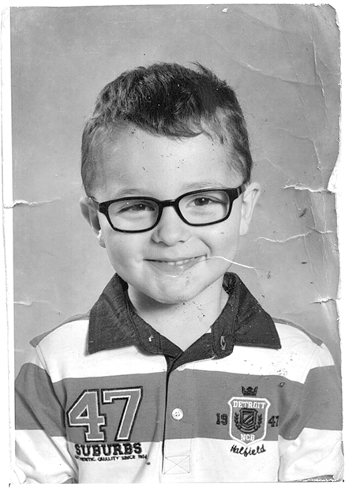

J'ai l'air assez jeune mais en vrai je suis sacrément vieux. Dans mes idées aussi.
Ça fait maintenant 17 ans que Periodico de Ayer existe et j'en suis assez fier.
Je ne trouvais plus beaucoup de sens à la vie à travers mon métier d'assureur. Je me suis décidé un matin, après avoir descendu un pack de bière, à changer le monde. Oui, rien que ça.
Et si vous êtes pas content, vous pouvez aller voir faire cuire un boeuf.
Un peu comme Xavier Niel ou Patrick Drahi, je compte fonder un empire de la presse. En vous proposant du contenu innovant et surtout des bonnes grosses blagues bien grasses.
Et vous savez quoi ? Ce n'est que le début de l'histoire. Un jour elle ira très très loin.
Compétences
-
Dessin20%
-
Bagarre96%
-
Bière92%
-
Cinéma15%
-
Cuisine17%
-
Ecriture7%